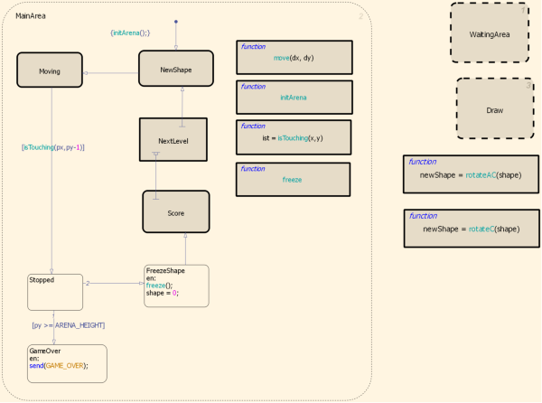
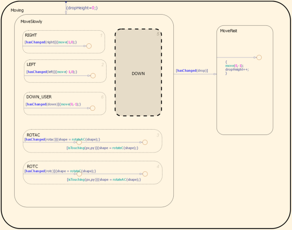
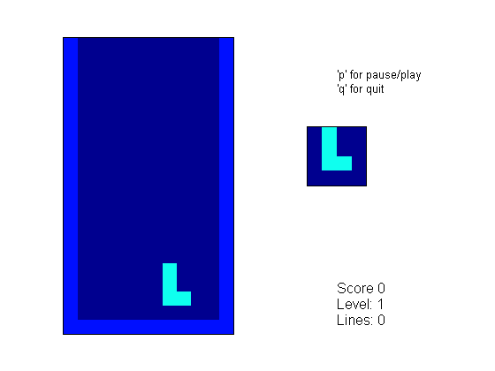

テトリス
ここでは、より現代的なプログラミングの実例および機能のいつくかを使用するために Stateflow® に同梱されている古典的なテトリス ゲームが再び登場します。hasChanged 関数演算子を使用して入力値の変更を照会する方法を示します。Embedded MATLAB™ は、アルゴリズム サブコンポーネントや、階層ステート、内部遷移などのいくつかの有用なセマンティクス抽象を概念化します。

Stateflow チャート TetrisLogic は、ゲームにおけるロジックを実装します。アリーナやプレイ フィールドは、プレイ アリーナを表す [21x12] の配列で表現されます。チャートでは、シミュレーション ステップごとにこの配列が更新され、MATLAB® のみで配列がイメージとして表示されます。
テトリス ゲームのフローは、プレイ フィールド現在のステートを表すサブステート MainArea によって本質的に表現されます。ゲームは、「新しい形状」(またはテトロニモ (4 つの正四角形を組み合わせてできる多角形)) を取得することから始まります。次に、ピースがユーザーの入力に応じて落下し続けます (または左右に移動します)。ピースが下部にあるもののいずれかに触れると (isTouching 条件)、ピースの動きは止まります。ピースが高すぎる位置で停止すると、ゲームは終了です。そうでない場合は、その形状の「動きを止めて」、必要に応じて、次のレベルに移動し、新しい形状を取得して続行します。
この階層でゲーム ロジックをグラフィカルに概念化すると、さまざまな階層で詳細を非表示にする便利な方法が提供されます。各サブステートでは、内部の複雑さを隠すことができます。
たとえば、Moving サブステートはユーザーの入力に基づいたテトロニモの動きに関与します。再び、ステートを使用してゲーム フローを概念化できます。テトロニモはゆっくりと動きます。あるいは、ユーザーが「スペースバー」を押すと (hasChanged(drop) が true を返します)、ユーザーの入力に関係なく素早く落ちます。
ユーザー入力を収集するには、hasChanged を使用してください。ユーザーがキーを押すたびに、MATLAB GUI はチャートに入力値を増加させ、タイムステップ中に hasChanged が true を返すようになります。
MovingSlowly の並列サブステートは、タイム ステップごとに複数のユーザー キーストロークを処理しようとしていることを捕捉します。
最後に、ユーザーからのキーストロークも捕捉する単純な MATLAB スクリプトを使用して GUI が実装されます。
キー マッピング:
- 左に移動する場合は j または LEFT
- 右に移動する場合は l または RIGHT
- 時計回りに回転する場合は i または UP
- 反時計回りに回転する場合は k または DOWN
- 高速で落とす場合は SPACE
- プレイまたは一時停止する場合は p
- 終了する場合は q
右側の小さい四角形の軸には、次のテトロニモが示されます。
